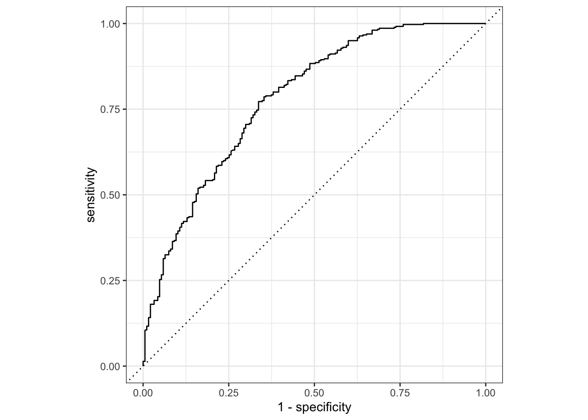
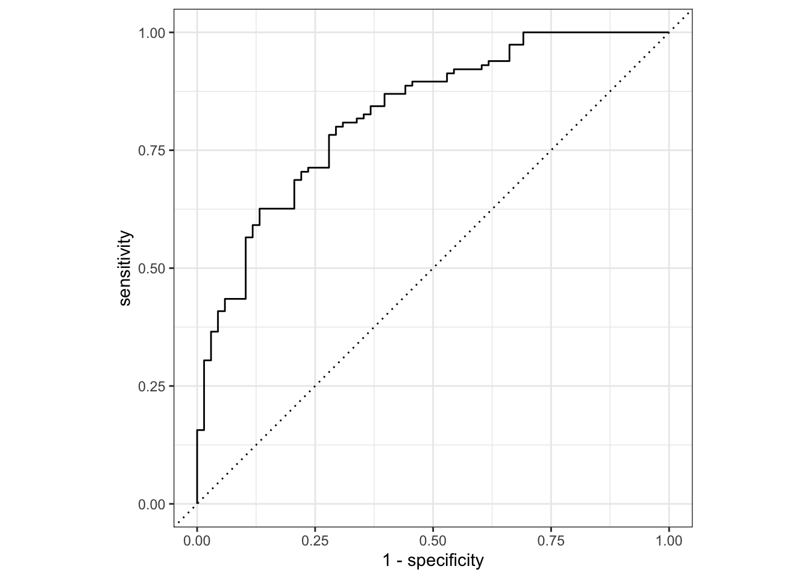

<!DOCTYPE html>
<html xmlns="http://www.w3.org/1999/xhtml" lang="en" xml:lang="en"><head>

<meta charset="utf-8">
<meta name="generator" content="quarto-1.2.313">

<meta name="viewport" content="width=device-width, initial-scale=1.0, user-scalable=yes">


<title>My Data Analysis Portfolio - Model Evaluation</title>
<style>
code{white-space: pre-wrap;}
span.smallcaps{font-variant: small-caps;}
div.columns{display: flex; gap: min(4vw, 1.5em);}
div.column{flex: auto; overflow-x: auto;}
div.hanging-indent{margin-left: 1.5em; text-indent: -1.5em;}
ul.task-list{list-style: none;}
ul.task-list li input[type="checkbox"] {
  width: 0.8em;
  margin: 0 0.8em 0.2em -1.6em;
  vertical-align: middle;
}
pre > code.sourceCode { white-space: pre; position: relative; }
pre > code.sourceCode > span { display: inline-block; line-height: 1.25; }
pre > code.sourceCode > span:empty { height: 1.2em; }
.sourceCode { overflow: visible; }
code.sourceCode > span { color: inherit; text-decoration: inherit; }
div.sourceCode { margin: 1em 0; }
pre.sourceCode { margin: 0; }
@media screen {
div.sourceCode { overflow: auto; }
}
@media print {
pre > code.sourceCode { white-space: pre-wrap; }
pre > code.sourceCode > span { text-indent: -5em; padding-left: 5em; }
}
pre.numberSource code
  { counter-reset: source-line 0; }
pre.numberSource code > span
  { position: relative; left: -4em; counter-increment: source-line; }
pre.numberSource code > span > a:first-child::before
  { content: counter(source-line);
    position: relative; left: -1em; text-align: right; vertical-align: baseline;
    border: none; display: inline-block;
    -webkit-touch-callout: none; -webkit-user-select: none;
    -khtml-user-select: none; -moz-user-select: none;
    -ms-user-select: none; user-select: none;
    padding: 0 4px; width: 4em;
    color: #aaaaaa;
  }
pre.numberSource { margin-left: 3em; border-left: 1px solid #aaaaaa;  padding-left: 4px; }
div.sourceCode
  {   }
@media screen {
pre > code.sourceCode > span > a:first-child::before { text-decoration: underline; }
}
code span.al { color: #ff0000; font-weight: bold; } /* Alert */
code span.an { color: #60a0b0; font-weight: bold; font-style: italic; } /* Annotation */
code span.at { color: #7d9029; } /* Attribute */
code span.bn { color: #40a070; } /* BaseN */
code span.bu { color: #008000; } /* BuiltIn */
code span.cf { color: #007020; font-weight: bold; } /* ControlFlow */
code span.ch { color: #4070a0; } /* Char */
code span.cn { color: #880000; } /* Constant */
code span.co { color: #60a0b0; font-style: italic; } /* Comment */
code span.cv { color: #60a0b0; font-weight: bold; font-style: italic; } /* CommentVar */
code span.do { color: #ba2121; font-style: italic; } /* Documentation */
code span.dt { color: #902000; } /* DataType */
code span.dv { color: #40a070; } /* DecVal */
code span.er { color: #ff0000; font-weight: bold; } /* Error */
code span.ex { } /* Extension */
code span.fl { color: #40a070; } /* Float */
code span.fu { color: #06287e; } /* Function */
code span.im { color: #008000; font-weight: bold; } /* Import */
code span.in { color: #60a0b0; font-weight: bold; font-style: italic; } /* Information */
code span.kw { color: #007020; font-weight: bold; } /* Keyword */
code span.op { color: #666666; } /* Operator */
code span.ot { color: #007020; } /* Other */
code span.pp { color: #bc7a00; } /* Preprocessor */
code span.sc { color: #4070a0; } /* SpecialChar */
code span.ss { color: #bb6688; } /* SpecialString */
code span.st { color: #4070a0; } /* String */
code span.va { color: #19177c; } /* Variable */
code span.vs { color: #4070a0; } /* VerbatimString */
code span.wa { color: #60a0b0; font-weight: bold; font-style: italic; } /* Warning */
</style>


<script src="../../site_libs/quarto-nav/quarto-nav.js"></script>
<script src="../../site_libs/quarto-nav/headroom.min.js"></script>
<script src="../../site_libs/clipboard/clipboard.min.js"></script>
<script src="../../site_libs/quarto-search/autocomplete.umd.js"></script>
<script src="../../site_libs/quarto-search/fuse.min.js"></script>
<script src="../../site_libs/quarto-search/quarto-search.js"></script>
<meta name="quarto:offset" content="../../">
<script src="../../site_libs/quarto-html/quarto.js"></script>
<script src="../../site_libs/quarto-html/popper.min.js"></script>
<script src="../../site_libs/quarto-html/tippy.umd.min.js"></script>
<script src="../../site_libs/quarto-html/anchor.min.js"></script>
<link href="../../site_libs/quarto-html/tippy.css" rel="stylesheet">
<link href="../../site_libs/quarto-html/quarto-syntax-highlighting.css" rel="stylesheet" id="quarto-text-highlighting-styles">
<script src="../../site_libs/bootstrap/bootstrap.min.js"></script>
<link href="../../site_libs/bootstrap/bootstrap-icons.css" rel="stylesheet">
<link href="../../site_libs/bootstrap/bootstrap.min.css" rel="stylesheet" id="quarto-bootstrap" data-mode="light">
<script id="quarto-search-options" type="application/json">{
  "location": "navbar",
  "copy-button": false,
  "collapse-after": 3,
  "panel-placement": "end",
  "type": "overlay",
  "limit": 20,
  "language": {
    "search-no-results-text": "No results",
    "search-matching-documents-text": "matching documents",
    "search-copy-link-title": "Copy link to search",
    "search-hide-matches-text": "Hide additional matches",
    "search-more-match-text": "more match in this document",
    "search-more-matches-text": "more matches in this document",
    "search-clear-button-title": "Clear",
    "search-detached-cancel-button-title": "Cancel",
    "search-submit-button-title": "Submit"
  }
}</script>


<link rel="stylesheet" href="styles.css">
</head>

<body class="nav-fixed fullcontent">

<div id="quarto-search-results"></div>
  <header id="quarto-header" class="headroom fixed-top">
    <nav class="navbar navbar-expand-lg navbar-dark ">
      <div class="navbar-container container-fluid">
      <div class="navbar-brand-container">
    <a class="navbar-brand" href="../../index.html">
    <span class="navbar-title">My Data Analysis Portfolio</span>
    </a>
  </div>
          <button class="navbar-toggler" type="button" data-bs-toggle="collapse" data-bs-target="#navbarCollapse" aria-controls="navbarCollapse" aria-expanded="false" aria-label="Toggle navigation" onclick="if (window.quartoToggleHeadroom) { window.quartoToggleHeadroom(); }">
  <span class="navbar-toggler-icon"></span>
</button>
          <div class="collapse navbar-collapse" id="navbarCollapse">
            <ul class="navbar-nav navbar-nav-scroll me-auto">
  <li class="nav-item">
    <a class="nav-link" href="../.././aboutme.html">
 <span class="menu-text">About Me</span></a>
  </li>  
  <li class="nav-item dropdown ">
    <a class="nav-link dropdown-toggle" href="#" id="nav-menu-projects" role="button" data-bs-toggle="dropdown" aria-expanded="false">
 <span class="menu-text">Projects</span>
    </a>
    <ul class="dropdown-menu" aria-labelledby="nav-menu-projects">    
        <li>
    <a class="dropdown-item" href="../.././Coding_exercise/coding_exercise.html">
 <span class="dropdown-text">R Coding Exercise</span></a>
  </li>  
        <li>
    <a class="dropdown-item" href="../.././visualization_exercise/visualization_exercise.html">
 <span class="dropdown-text">Visualization Exercise</span></a>
  </li>  
        <li>
    <a class="dropdown-item" href="../.././tidytuesday_exercise/tidytuesday_exercise.html">
 <span class="dropdown-text">Tidy Tuesday Exercise</span></a>
  </li>  
        <li>
    <a class="dropdown-item" href="../.././tidytuesday_exercise/tidytuesday_exercise2.html">
 <span class="dropdown-text">Tidy Tuesday Exercise 2</span></a>
  </li>  
        <li>
    <a class="dropdown-item" href="../.././dataanalysis-exercise/dataanalysis_exercise.html">
 <span class="dropdown-text">R Data Analysis Exercise</span></a>
  </li>  
    </ul>
  </li>
  <li class="nav-item dropdown ">
    <a class="nav-link dropdown-toggle" href="#" id="nav-menu-flu-analysis" role="button" data-bs-toggle="dropdown" aria-expanded="false">
 <span class="menu-text">Flu Analysis</span>
    </a>
    <ul class="dropdown-menu" aria-labelledby="nav-menu-flu-analysis">    
        <li>
    <a class="dropdown-item" href="../.././Fluanalysis_exercise/code/wrangling.html">
 <span class="dropdown-text">Wrangling Code</span></a>
  </li>  
        <li>
    <a class="dropdown-item" href="../.././Fluanalysis_exercise/code/exploration.html">
 <span class="dropdown-text">Exploration</span></a>
  </li>  
        <li>
    <a class="dropdown-item" href="../.././Fluanalysis_exercise/code/Fitting.html">
 <span class="dropdown-text">Fitting</span></a>
  </li>  
        <li>
    <a class="dropdown-item" href="../.././Fluanalysis_exercise/code/modeleval.html">
 <span class="dropdown-text">Evaluation</span></a>
  </li>  
        <li>
    <a class="dropdown-item" href="../.././Fluanalysis_exercise/code/machinelearning.html">
 <span class="dropdown-text">Machine Learning</span></a>
  </li>  
    </ul>
  </li>
</ul>
            <ul class="navbar-nav navbar-nav-scroll ms-auto">
  <li class="nav-item compact">
    <a class="nav-link" href="https://github.com/Jacobmatta/jacobmatta-MADA-portfolio/"><i class="bi bi-github" role="img">
</i> 
 <span class="menu-text"></span></a>
  </li>  
</ul>
              <div id="quarto-search" class="" title="Search"></div>
          </div> <!-- /navcollapse -->
      </div> <!-- /container-fluid -->
    </nav>
</header>
<!-- content -->
<div id="quarto-content" class="quarto-container page-columns page-rows-contents page-layout-article page-navbar">
<!-- sidebar -->
<!-- margin-sidebar -->
    
<!-- main -->
<main class="content" id="quarto-document-content">

<header id="title-block-header" class="quarto-title-block default">
<div class="quarto-title">
<h1 class="title">Model Evaluation</h1>
</div>


<div class="quarto-title-meta">

    
  
    
  </div>
  

</header>

<section id="library" class="level3">
<h3 class="anchored" data-anchor-id="library">Library</h3>
<div class="cell">
<div class="sourceCode cell-code" id="cb1"><pre class="sourceCode r code-with-copy"><code class="sourceCode r"><span id="cb1-1"><a href="#cb1-1" aria-hidden="true" tabindex="-1"></a><span class="fu">library</span>(tidymodels)</span></code><button title="Copy to Clipboard" class="code-copy-button"><i class="bi"></i></button></pre></div>
<div class="cell-output cell-output-stderr">
<pre><code>── Attaching packages ────────────────────────────────────── tidymodels 1.0.0 ──</code></pre>
</div>
<div class="cell-output cell-output-stderr">
<pre><code>✔ broom        1.0.3     ✔ recipes      1.0.3
✔ dials        1.1.0     ✔ rsample      1.1.1
✔ dplyr        1.1.0     ✔ tibble       3.1.8
✔ ggplot2      3.4.0     ✔ tidyr        1.2.1
✔ infer        1.0.4     ✔ tune         1.0.1
✔ modeldata    1.1.0     ✔ workflows    1.1.3
✔ parsnip      1.0.4     ✔ workflowsets 1.0.0
✔ purrr        0.3.5     ✔ yardstick    1.1.0</code></pre>
</div>
<div class="cell-output cell-output-stderr">
<pre><code>── Conflicts ───────────────────────────────────────── tidymodels_conflicts() ──
✖ purrr::discard() masks scales::discard()
✖ dplyr::filter()  masks stats::filter()
✖ dplyr::lag()     masks stats::lag()
✖ recipes::step()  masks stats::step()
• Search for functions across packages at https://www.tidymodels.org/find/</code></pre>
</div>
<div class="sourceCode cell-code" id="cb5"><pre class="sourceCode r code-with-copy"><code class="sourceCode r"><span id="cb5-1"><a href="#cb5-1" aria-hidden="true" tabindex="-1"></a><span class="fu">library</span>(here)</span></code><button title="Copy to Clipboard" class="code-copy-button"><i class="bi"></i></button></pre></div>
<div class="cell-output cell-output-stderr">
<pre><code>here() starts at /Users/jacobmatta/Documents/R/jacobmatta-MADA-portfolio</code></pre>
</div>
<div class="sourceCode cell-code" id="cb7"><pre class="sourceCode r code-with-copy"><code class="sourceCode r"><span id="cb7-1"><a href="#cb7-1" aria-hidden="true" tabindex="-1"></a><span class="fu">library</span>(rsample)</span>
<span id="cb7-2"><a href="#cb7-2" aria-hidden="true" tabindex="-1"></a><span class="fu">library</span>(parsnip) <span class="co">#building a model specification</span></span>
<span id="cb7-3"><a href="#cb7-3" aria-hidden="true" tabindex="-1"></a><span class="fu">library</span>(yardstick)</span>
<span id="cb7-4"><a href="#cb7-4" aria-hidden="true" tabindex="-1"></a><span class="fu">library</span>(dplyr)</span></code><button title="Copy to Clipboard" class="code-copy-button"><i class="bi"></i></button></pre></div>
</div>
</section>
<section id="loading-the-data" class="level3">
<h3 class="anchored" data-anchor-id="loading-the-data">Loading the data</h3>
<div class="cell">
<div class="sourceCode cell-code" id="cb8"><pre class="sourceCode r code-with-copy"><code class="sourceCode r"><span id="cb8-1"><a href="#cb8-1" aria-hidden="true" tabindex="-1"></a>location <span class="ot">=</span> <span class="fu">here</span>(<span class="st">"Fluanalysis_exercise"</span>, <span class="st">"data"</span>, <span class="st">"cleandata"</span>, <span class="st">"cleandata.RDS"</span>)</span>
<span id="cb8-2"><a href="#cb8-2" aria-hidden="true" tabindex="-1"></a>clean_data <span class="ot">=</span> <span class="fu">readRDS</span>(location)</span></code><button title="Copy to Clipboard" class="code-copy-button"><i class="bi"></i></button></pre></div>
</div>
</section>
<section id="data-splitting" class="level2">
<h2 class="anchored" data-anchor-id="data-splitting">Data Splitting</h2>
<section id="we-can-use-the-rsample-package-to-create-an-object-that-contains-the-information-on-how-to-split-the-data" class="level3">
<h3 class="anchored" data-anchor-id="we-can-use-the-rsample-package-to-create-an-object-that-contains-the-information-on-how-to-split-the-data">We can use the rsample package to create an object that contains the information on how to split the data</h3>
<div class="cell">
<div class="sourceCode cell-code" id="cb9"><pre class="sourceCode r code-with-copy"><code class="sourceCode r"><span id="cb9-1"><a href="#cb9-1" aria-hidden="true" tabindex="-1"></a><span class="co"># Fix the random numbers by setting the seed </span></span>
<span id="cb9-2"><a href="#cb9-2" aria-hidden="true" tabindex="-1"></a><span class="co"># This enables the analysis to be reproducible when random numbers are used </span></span>
<span id="cb9-3"><a href="#cb9-3" aria-hidden="true" tabindex="-1"></a><span class="fu">set.seed</span>(<span class="dv">222</span>)</span>
<span id="cb9-4"><a href="#cb9-4" aria-hidden="true" tabindex="-1"></a></span>
<span id="cb9-5"><a href="#cb9-5" aria-hidden="true" tabindex="-1"></a><span class="co"># Put 3/4 of the data into the training set </span></span>
<span id="cb9-6"><a href="#cb9-6" aria-hidden="true" tabindex="-1"></a>data_split <span class="ot">=</span> <span class="fu">initial_split</span>(clean_data, <span class="at">prop =</span> <span class="dv">3</span><span class="sc">/</span><span class="dv">4</span>)</span></code><button title="Copy to Clipboard" class="code-copy-button"><i class="bi"></i></button></pre></div>
</div>
</section>
<section id="create-data-frames-for-the-two-sets" class="level3">
<h3 class="anchored" data-anchor-id="create-data-frames-for-the-two-sets">Create data frames for the two sets</h3>
<div class="cell">
<div class="sourceCode cell-code" id="cb10"><pre class="sourceCode r code-with-copy"><code class="sourceCode r"><span id="cb10-1"><a href="#cb10-1" aria-hidden="true" tabindex="-1"></a>train_data <span class="ot">=</span> <span class="fu">training</span>(data_split)</span>
<span id="cb10-2"><a href="#cb10-2" aria-hidden="true" tabindex="-1"></a>test_data  <span class="ot">=</span> <span class="fu">testing</span>(data_split)</span></code><button title="Copy to Clipboard" class="code-copy-button"><i class="bi"></i></button></pre></div>
</div>
</section>
</section>
<section id="creating-a-simple-recipe-that-fits-a-logistic-model-to-our-categorical-outcome-of-interestnausea-using-all-predictors." class="level2">
<h2 class="anchored" data-anchor-id="creating-a-simple-recipe-that-fits-a-logistic-model-to-our-categorical-outcome-of-interestnausea-using-all-predictors.">Creating a simple recipe that fits a logistic model to our categorical outcome of interest(Nausea), using all predictors.</h2>
<section id="initiating-a-new-recipe" class="level3">
<h3 class="anchored" data-anchor-id="initiating-a-new-recipe">Initiating a new recipe</h3>
<div class="cell">
<div class="sourceCode cell-code" id="cb11"><pre class="sourceCode r code-with-copy"><code class="sourceCode r"><span id="cb11-1"><a href="#cb11-1" aria-hidden="true" tabindex="-1"></a>flu_rec <span class="ot">&lt;-</span> </span>
<span id="cb11-2"><a href="#cb11-2" aria-hidden="true" tabindex="-1"></a>  <span class="fu">recipe</span>(Nausea <span class="sc">~</span> ., <span class="at">data =</span> train_data) <span class="co"># . indicates all predictors are present</span></span></code><button title="Copy to Clipboard" class="code-copy-button"><i class="bi"></i></button></pre></div>
</div>
</section>
<section id="set-a-model" class="level3">
<h3 class="anchored" data-anchor-id="set-a-model">Set a model</h3>
<div class="cell">
<div class="sourceCode cell-code" id="cb12"><pre class="sourceCode r code-with-copy"><code class="sourceCode r"><span id="cb12-1"><a href="#cb12-1" aria-hidden="true" tabindex="-1"></a>lr_mod <span class="ot">&lt;-</span> </span>
<span id="cb12-2"><a href="#cb12-2" aria-hidden="true" tabindex="-1"></a>  <span class="fu">logistic_reg</span>() <span class="sc">%&gt;%</span> </span>
<span id="cb12-3"><a href="#cb12-3" aria-hidden="true" tabindex="-1"></a>  <span class="fu">set_engine</span>(<span class="st">"glm"</span>)</span></code><button title="Copy to Clipboard" class="code-copy-button"><i class="bi"></i></button></pre></div>
</div>
</section>
<section id="using-the-workflow-function-to-create-a-simple-workflow-that-fits-a-logistic-model-to-all-predictors-using-the-glm-engine" class="level3">
<h3 class="anchored" data-anchor-id="using-the-workflow-function-to-create-a-simple-workflow-that-fits-a-logistic-model-to-all-predictors-using-the-glm-engine">Using the workflow() function to create a simple workflow that fits a logistic model to all predictors using the glm engine</h3>
<div class="cell">
<div class="sourceCode cell-code" id="cb13"><pre class="sourceCode r code-with-copy"><code class="sourceCode r"><span id="cb13-1"><a href="#cb13-1" aria-hidden="true" tabindex="-1"></a>flu_wflow <span class="ot">&lt;-</span> </span>
<span id="cb13-2"><a href="#cb13-2" aria-hidden="true" tabindex="-1"></a>  <span class="fu">workflow</span>() <span class="sc">%&gt;%</span> </span>
<span id="cb13-3"><a href="#cb13-3" aria-hidden="true" tabindex="-1"></a>  <span class="fu">add_model</span>(lr_mod) <span class="sc">%&gt;%</span> </span>
<span id="cb13-4"><a href="#cb13-4" aria-hidden="true" tabindex="-1"></a>  <span class="fu">add_recipe</span>(flu_rec)</span>
<span id="cb13-5"><a href="#cb13-5" aria-hidden="true" tabindex="-1"></a>flu_wflow</span></code><button title="Copy to Clipboard" class="code-copy-button"><i class="bi"></i></button></pre></div>
<div class="cell-output cell-output-stdout">
<pre><code>══ Workflow ════════════════════════════════════════════════════════════════════
Preprocessor: Recipe
Model: logistic_reg()

── Preprocessor ────────────────────────────────────────────────────────────────
0 Recipe Steps

── Model ───────────────────────────────────────────────────────────────────────
Logistic Regression Model Specification (classification)

Computational engine: glm </code></pre>
</div>
</div>
</section>
<section id="a-single-function-that-can-be-used-to-prepare-the-recipe-and-train-the-model-from-the-resulting-predictors" class="level3">
<h3 class="anchored" data-anchor-id="a-single-function-that-can-be-used-to-prepare-the-recipe-and-train-the-model-from-the-resulting-predictors">A single function that can be used to prepare the recipe and train the model from the resulting predictors</h3>
<div class="cell">
<div class="sourceCode cell-code" id="cb15"><pre class="sourceCode r code-with-copy"><code class="sourceCode r"><span id="cb15-1"><a href="#cb15-1" aria-hidden="true" tabindex="-1"></a><span class="co"># fitting the model to the training data</span></span>
<span id="cb15-2"><a href="#cb15-2" aria-hidden="true" tabindex="-1"></a>flu_fit1 <span class="ot">&lt;-</span> </span>
<span id="cb15-3"><a href="#cb15-3" aria-hidden="true" tabindex="-1"></a>  flu_wflow <span class="sc">%&gt;%</span> </span>
<span id="cb15-4"><a href="#cb15-4" aria-hidden="true" tabindex="-1"></a>  <span class="fu">fit</span>(<span class="at">data =</span> train_data)</span>
<span id="cb15-5"><a href="#cb15-5" aria-hidden="true" tabindex="-1"></a></span>
<span id="cb15-6"><a href="#cb15-6" aria-hidden="true" tabindex="-1"></a><span class="co"># fitting the model to the test data </span></span>
<span id="cb15-7"><a href="#cb15-7" aria-hidden="true" tabindex="-1"></a>flu_fit2 <span class="ot">&lt;-</span> </span>
<span id="cb15-8"><a href="#cb15-8" aria-hidden="true" tabindex="-1"></a>  flu_wflow <span class="sc">%&gt;%</span> </span>
<span id="cb15-9"><a href="#cb15-9" aria-hidden="true" tabindex="-1"></a>  <span class="fu">fit</span>(<span class="at">data =</span> test_data)</span></code><button title="Copy to Clipboard" class="code-copy-button"><i class="bi"></i></button></pre></div>
</div>
</section>
<section id="extracting-the-model-or-recipe-objects-from-the-workflow-in-order-to-view-model-coefficients" class="level3">
<h3 class="anchored" data-anchor-id="extracting-the-model-or-recipe-objects-from-the-workflow-in-order-to-view-model-coefficients">Extracting the model or recipe objects from the workflow in order to view model coefficients</h3>
<div class="cell">
<div class="sourceCode cell-code" id="cb16"><pre class="sourceCode r code-with-copy"><code class="sourceCode r"><span id="cb16-1"><a href="#cb16-1" aria-hidden="true" tabindex="-1"></a><span class="co"># Extracting coefficients for model fit to the training data</span></span>
<span id="cb16-2"><a href="#cb16-2" aria-hidden="true" tabindex="-1"></a>flu_fit1 <span class="sc">%&gt;%</span> </span>
<span id="cb16-3"><a href="#cb16-3" aria-hidden="true" tabindex="-1"></a>  <span class="fu">extract_fit_parsnip</span>() <span class="sc">%&gt;%</span> </span>
<span id="cb16-4"><a href="#cb16-4" aria-hidden="true" tabindex="-1"></a>  <span class="fu">tidy</span>() <span class="co">#tidy() function used to get a tidy tibble of the model coefficients </span></span></code><button title="Copy to Clipboard" class="code-copy-button"><i class="bi"></i></button></pre></div>
<div class="cell-output cell-output-stdout">
<pre><code># A tibble: 32 × 5
   term                 estimate std.error statistic p.value
   &lt;chr&gt;                   &lt;dbl&gt;     &lt;dbl&gt;     &lt;dbl&gt;   &lt;dbl&gt;
 1 (Intercept)            2.06       9.30      0.222  0.824 
 2 SwollenLymphNodesYes  -0.223      0.230    -0.971  0.332 
 3 ChestCongestionYes     0.202      0.250     0.807  0.420 
 4 ChillsSweatsYes        0.189      0.329     0.574  0.566 
 5 NasalCongestionYes     0.610      0.309     1.98   0.0479
 6 SneezeYes              0.126      0.245     0.515  0.607 
 7 FatigueYes             0.251      0.437     0.575  0.565 
 8 SubjectiveFeverYes     0.170      0.259     0.657  0.511 
 9 HeadacheYes            0.518      0.351     1.47   0.140 
10 WeaknessMild          -0.0578     0.508    -0.114  0.909 
# … with 22 more rows</code></pre>
</div>
<div class="sourceCode cell-code" id="cb18"><pre class="sourceCode r code-with-copy"><code class="sourceCode r"><span id="cb18-1"><a href="#cb18-1" aria-hidden="true" tabindex="-1"></a><span class="co">#Extracting the coefficients for the model fit to the test data </span></span>
<span id="cb18-2"><a href="#cb18-2" aria-hidden="true" tabindex="-1"></a>flu_fit2 <span class="sc">%&gt;%</span> </span>
<span id="cb18-3"><a href="#cb18-3" aria-hidden="true" tabindex="-1"></a>  <span class="fu">extract_fit_parsnip</span>() <span class="sc">%&gt;%</span> </span>
<span id="cb18-4"><a href="#cb18-4" aria-hidden="true" tabindex="-1"></a>  <span class="fu">tidy</span>() </span></code><button title="Copy to Clipboard" class="code-copy-button"><i class="bi"></i></button></pre></div>
<div class="cell-output cell-output-stdout">
<pre><code># A tibble: 32 × 5
   term                 estimate std.error statistic p.value
   &lt;chr&gt;                   &lt;dbl&gt;     &lt;dbl&gt;     &lt;dbl&gt;   &lt;dbl&gt;
 1 (Intercept)           -3.43      17.4     -0.197    0.844
 2 SwollenLymphNodesYes  -0.402      0.467   -0.859    0.390
 3 ChestCongestionYes     0.518      0.496    1.04     0.296
 4 ChillsSweatsYes        0.718      0.688    1.04     0.296
 5 NasalCongestionYes    -0.0928     0.574   -0.162    0.872
 6 SneezeYes              0.395      0.469    0.843    0.399
 7 FatigueYes             0.595      0.848    0.701    0.483
 8 SubjectiveFeverYes     0.677      0.522    1.30     0.195
 9 HeadacheYes           -0.0219     0.563   -0.0389   0.969
10 WeaknessMild          -0.743      1.06    -0.704    0.481
# … with 22 more rows</code></pre>
</div>
</div>
</section>
<section id="using-augment-to-predict-the-and-save-the-predicted-data-with-the-dataset" class="level3">
<h3 class="anchored" data-anchor-id="using-augment-to-predict-the-and-save-the-predicted-data-with-the-dataset">Using augment() to predict the and save the predicted data with the dataset</h3>
<div class="cell">
<div class="sourceCode cell-code" id="cb20"><pre class="sourceCode r code-with-copy"><code class="sourceCode r"><span id="cb20-1"><a href="#cb20-1" aria-hidden="true" tabindex="-1"></a>flu_aug1 <span class="ot">=</span> <span class="fu">augment</span>(flu_fit1, train_data)</span>
<span id="cb20-2"><a href="#cb20-2" aria-hidden="true" tabindex="-1"></a></span>
<span id="cb20-3"><a href="#cb20-3" aria-hidden="true" tabindex="-1"></a>flu_aug2 <span class="ot">=</span> <span class="fu">augment</span>(flu_fit2, test_data)</span>
<span id="cb20-4"><a href="#cb20-4" aria-hidden="true" tabindex="-1"></a></span>
<span id="cb20-5"><a href="#cb20-5" aria-hidden="true" tabindex="-1"></a>flu_aug1</span></code><button title="Copy to Clipboard" class="code-copy-button"><i class="bi"></i></button></pre></div>
<div class="cell-output cell-output-stdout">
<pre><code># A tibble: 547 × 29
   SwollenLymph…¹ Chest…² Chill…³ Nasal…⁴ Sneeze Fatigue Subje…⁵ Heada…⁶ Weakn…⁷
   &lt;fct&gt;          &lt;fct&gt;   &lt;fct&gt;   &lt;fct&gt;   &lt;fct&gt;  &lt;fct&gt;   &lt;fct&gt;   &lt;fct&gt;   &lt;fct&gt;  
 1 No             No      Yes     Yes     No     Yes     Yes     No      Mild   
 2 No             Yes     Yes     Yes     Yes    Yes     Yes     Yes     Modera…
 3 Yes            Yes     Yes     Yes     Yes    Yes     No      Yes     Mild   
 4 No             Yes     No      Yes     No     Yes     No      Yes     Mild   
 5 Yes            Yes     Yes     Yes     Yes    Yes     Yes     Yes     Modera…
 6 Yes            No      Yes     Yes     Yes    Yes     No      Yes     Modera…
 7 No             Yes     Yes     Yes     Yes    No      Yes     No      None   
 8 No             Yes     Yes     Yes     No     Yes     Yes     Yes     Mild   
 9 Yes            No      Yes     Yes     No     Yes     Yes     Yes     Modera…
10 No             No      No      Yes     Yes    Yes     Yes     Yes     Modera…
# … with 537 more rows, 20 more variables: CoughIntensity &lt;fct&gt;, Myalgia &lt;fct&gt;,
#   RunnyNose &lt;fct&gt;, AbPain &lt;fct&gt;, ChestPain &lt;fct&gt;, Diarrhea &lt;fct&gt;,
#   EyePn &lt;fct&gt;, Insomnia &lt;fct&gt;, ItchyEye &lt;fct&gt;, Nausea &lt;fct&gt;, EarPn &lt;fct&gt;,
#   Pharyngitis &lt;fct&gt;, Breathless &lt;fct&gt;, Vision &lt;fct&gt;, Vomit &lt;fct&gt;,
#   Wheeze &lt;fct&gt;, BodyTemp &lt;dbl&gt;, .pred_class &lt;fct&gt;, .pred_No &lt;dbl&gt;,
#   .pred_Yes &lt;dbl&gt;, and abbreviated variable names ¹​SwollenLymphNodes,
#   ²​ChestCongestion, ³​ChillsSweats, ⁴​NasalCongestion, ⁵​SubjectiveFever, …</code></pre>
</div>
<div class="sourceCode cell-code" id="cb22"><pre class="sourceCode r code-with-copy"><code class="sourceCode r"><span id="cb22-1"><a href="#cb22-1" aria-hidden="true" tabindex="-1"></a>flu_aug2</span></code><button title="Copy to Clipboard" class="code-copy-button"><i class="bi"></i></button></pre></div>
<div class="cell-output cell-output-stdout">
<pre><code># A tibble: 183 × 29
   SwollenLymph…¹ Chest…² Chill…³ Nasal…⁴ Sneeze Fatigue Subje…⁵ Heada…⁶ Weakn…⁷
   &lt;fct&gt;          &lt;fct&gt;   &lt;fct&gt;   &lt;fct&gt;   &lt;fct&gt;  &lt;fct&gt;   &lt;fct&gt;   &lt;fct&gt;   &lt;fct&gt;  
 1 Yes            No      No      No      No     Yes     Yes     Yes     Mild   
 2 Yes            Yes     Yes     Yes     Yes    Yes     Yes     Yes     Severe 
 3 No             No      Yes     No      No     Yes     Yes     No      Mild   
 4 Yes            Yes     Yes     Yes     Yes    Yes     Yes     Yes     Mild   
 5 No             Yes     No      No      Yes    Yes     No      Yes     Severe 
 6 No             No      Yes     Yes     No     Yes     Yes     Yes     Severe 
 7 No             No      Yes     Yes     Yes    Yes     Yes     Yes     Mild   
 8 Yes            Yes     Yes     Yes     Yes    Yes     Yes     No      Modera…
 9 No             No      Yes     Yes     No     Yes     Yes     Yes     Modera…
10 No             No      Yes     Yes     Yes    Yes     Yes     Yes     Modera…
# … with 173 more rows, 20 more variables: CoughIntensity &lt;fct&gt;, Myalgia &lt;fct&gt;,
#   RunnyNose &lt;fct&gt;, AbPain &lt;fct&gt;, ChestPain &lt;fct&gt;, Diarrhea &lt;fct&gt;,
#   EyePn &lt;fct&gt;, Insomnia &lt;fct&gt;, ItchyEye &lt;fct&gt;, Nausea &lt;fct&gt;, EarPn &lt;fct&gt;,
#   Pharyngitis &lt;fct&gt;, Breathless &lt;fct&gt;, Vision &lt;fct&gt;, Vomit &lt;fct&gt;,
#   Wheeze &lt;fct&gt;, BodyTemp &lt;dbl&gt;, .pred_class &lt;fct&gt;, .pred_No &lt;dbl&gt;,
#   .pred_Yes &lt;dbl&gt;, and abbreviated variable names ¹​SwollenLymphNodes,
#   ²​ChestCongestion, ³​ChillsSweats, ⁴​NasalCongestion, ⁵​SubjectiveFever, …</code></pre>
</div>
</div>
</section>
<section id="creating-an-roc-curve-and-producing-estimates-under-the-curve-for-the-training-data-for-predicted-class-probability-of-no" class="level3">
<h3 class="anchored" data-anchor-id="creating-an-roc-curve-and-producing-estimates-under-the-curve-for-the-training-data-for-predicted-class-probability-of-no">Creating an ROC curve and producing estimates under the curve for the training data for predicted class probability of No</h3>
<div class="cell">
<div class="sourceCode cell-code" id="cb24"><pre class="sourceCode r code-with-copy"><code class="sourceCode r"><span id="cb24-1"><a href="#cb24-1" aria-hidden="true" tabindex="-1"></a>flu_aug1 <span class="sc">%&gt;%</span> </span>
<span id="cb24-2"><a href="#cb24-2" aria-hidden="true" tabindex="-1"></a>  <span class="fu">roc_curve</span>(<span class="at">truth =</span> Nausea, .pred_No)  <span class="sc">%&gt;%</span> </span>
<span id="cb24-3"><a href="#cb24-3" aria-hidden="true" tabindex="-1"></a>  autoplot</span></code><button title="Copy to Clipboard" class="code-copy-button"><i class="bi"></i></button></pre></div>
<div class="cell-output cell-output-stderr">
<pre><code>Warning: Returning more (or less) than 1 row per `summarise()` group was deprecated in
dplyr 1.1.0.
ℹ Please use `reframe()` instead.
ℹ When switching from `summarise()` to `reframe()`, remember that `reframe()`
  always returns an ungrouped data frame and adjust accordingly.
ℹ The deprecated feature was likely used in the yardstick package.
  Please report the issue at &lt;]8;;https://github.com/tidymodels/yardstick/issueshttps://github.com/tidymodels/yardstick/issues]8;;&gt;.</code></pre>
</div>
<div class="cell-output-display">
<p></p>
</div>
<div class="sourceCode cell-code" id="cb26"><pre class="sourceCode r code-with-copy"><code class="sourceCode r"><span id="cb26-1"><a href="#cb26-1" aria-hidden="true" tabindex="-1"></a>flu_aug1 <span class="sc">%&gt;%</span> </span>
<span id="cb26-2"><a href="#cb26-2" aria-hidden="true" tabindex="-1"></a>  <span class="fu">roc_auc</span>(<span class="at">truth =</span> Nausea, .pred_No)</span></code><button title="Copy to Clipboard" class="code-copy-button"><i class="bi"></i></button></pre></div>
<div class="cell-output cell-output-stdout">
<pre><code># A tibble: 1 × 3
  .metric .estimator .estimate
  &lt;chr&gt;   &lt;chr&gt;          &lt;dbl&gt;
1 roc_auc binary         0.781</code></pre>
</div>
</div>
</section>
<section id="creating-an-roc-curve-and-producing-estimates-under-the-curve-for-the-test-data-for-predicted-class-probability-of-no" class="level3">
<h3 class="anchored" data-anchor-id="creating-an-roc-curve-and-producing-estimates-under-the-curve-for-the-test-data-for-predicted-class-probability-of-no">Creating an ROC curve and producing estimates under the curve for the test data for predicted class probability of No</h3>
<div class="cell">
<div class="sourceCode cell-code" id="cb28"><pre class="sourceCode r code-with-copy"><code class="sourceCode r"><span id="cb28-1"><a href="#cb28-1" aria-hidden="true" tabindex="-1"></a>flu_aug2 <span class="sc">%&gt;%</span> </span>
<span id="cb28-2"><a href="#cb28-2" aria-hidden="true" tabindex="-1"></a>  <span class="fu">roc_curve</span>(<span class="at">truth =</span> Nausea, .pred_No)  <span class="sc">%&gt;%</span> </span>
<span id="cb28-3"><a href="#cb28-3" aria-hidden="true" tabindex="-1"></a>  autoplot</span></code><button title="Copy to Clipboard" class="code-copy-button"><i class="bi"></i></button></pre></div>
<div class="cell-output-display">
<p></p>
</div>
<div class="sourceCode cell-code" id="cb29"><pre class="sourceCode r code-with-copy"><code class="sourceCode r"><span id="cb29-1"><a href="#cb29-1" aria-hidden="true" tabindex="-1"></a>flu_aug2 <span class="sc">%&gt;%</span> </span>
<span id="cb29-2"><a href="#cb29-2" aria-hidden="true" tabindex="-1"></a>  <span class="fu">roc_auc</span>(<span class="at">truth =</span> Nausea, .pred_No)</span></code><button title="Copy to Clipboard" class="code-copy-button"><i class="bi"></i></button></pre></div>
<div class="cell-output cell-output-stdout">
<pre><code># A tibble: 1 × 3
  .metric .estimator .estimate
  &lt;chr&gt;   &lt;chr&gt;          &lt;dbl&gt;
1 roc_auc binary         0.826</code></pre>
</div>
</div>
</section>
</section>
<section id="alternate-model" class="level1">
<h1>Alternate Model</h1>
<section id="setting-up-the-recipe-for-a-model-between-main-predictor-and-categorical-outcome" class="level3">
<h3 class="anchored" data-anchor-id="setting-up-the-recipe-for-a-model-between-main-predictor-and-categorical-outcome">Setting up the recipe for a model between main predictor and categorical outcome</h3>
<div class="cell">
<div class="sourceCode cell-code" id="cb31"><pre class="sourceCode r code-with-copy"><code class="sourceCode r"><span id="cb31-1"><a href="#cb31-1" aria-hidden="true" tabindex="-1"></a>flu2_rec <span class="ot">&lt;-</span> </span>
<span id="cb31-2"><a href="#cb31-2" aria-hidden="true" tabindex="-1"></a>  <span class="fu">recipe</span>(Nausea <span class="sc">~</span> RunnyNose, <span class="at">data =</span> train_data) <span class="co"># . indicates all predictors are present</span></span></code><button title="Copy to Clipboard" class="code-copy-button"><i class="bi"></i></button></pre></div>
</div>
</section>
<section id="set-a-model-1" class="level3">
<h3 class="anchored" data-anchor-id="set-a-model-1">Set a model</h3>
<div class="cell">
<div class="sourceCode cell-code" id="cb32"><pre class="sourceCode r code-with-copy"><code class="sourceCode r"><span id="cb32-1"><a href="#cb32-1" aria-hidden="true" tabindex="-1"></a>lr_mod2 <span class="ot">&lt;-</span> </span>
<span id="cb32-2"><a href="#cb32-2" aria-hidden="true" tabindex="-1"></a>  <span class="fu">logistic_reg</span>() <span class="sc">%&gt;%</span> </span>
<span id="cb32-3"><a href="#cb32-3" aria-hidden="true" tabindex="-1"></a>  <span class="fu">set_engine</span>(<span class="st">"glm"</span>)</span></code><button title="Copy to Clipboard" class="code-copy-button"><i class="bi"></i></button></pre></div>
</div>
</section>
<section id="using-the-workflow-function-to-create-a-simple-workflow-that-fits-a-logistic-model-to-all-predictors-using-the-glm-engine-1" class="level3">
<h3 class="anchored" data-anchor-id="using-the-workflow-function-to-create-a-simple-workflow-that-fits-a-logistic-model-to-all-predictors-using-the-glm-engine-1">Using the workflow() function to create a simple workflow that fits a logistic model to all predictors using the glm engine</h3>
<div class="cell">
<div class="sourceCode cell-code" id="cb33"><pre class="sourceCode r code-with-copy"><code class="sourceCode r"><span id="cb33-1"><a href="#cb33-1" aria-hidden="true" tabindex="-1"></a>flu_wflow2 <span class="ot">&lt;-</span> </span>
<span id="cb33-2"><a href="#cb33-2" aria-hidden="true" tabindex="-1"></a>  <span class="fu">workflow</span>() <span class="sc">%&gt;%</span> </span>
<span id="cb33-3"><a href="#cb33-3" aria-hidden="true" tabindex="-1"></a>  <span class="fu">add_model</span>(lr_mod) <span class="sc">%&gt;%</span> </span>
<span id="cb33-4"><a href="#cb33-4" aria-hidden="true" tabindex="-1"></a>  <span class="fu">add_recipe</span>(flu_rec)</span>
<span id="cb33-5"><a href="#cb33-5" aria-hidden="true" tabindex="-1"></a>flu_wflow2</span></code><button title="Copy to Clipboard" class="code-copy-button"><i class="bi"></i></button></pre></div>
<div class="cell-output cell-output-stdout">
<pre><code>══ Workflow ════════════════════════════════════════════════════════════════════
Preprocessor: Recipe
Model: logistic_reg()

── Preprocessor ────────────────────────────────────────────────────────────────
0 Recipe Steps

── Model ───────────────────────────────────────────────────────────────────────
Logistic Regression Model Specification (classification)

Computational engine: glm </code></pre>
</div>
</div>
</section>
<section id="a-single-function-that-can-be-used-to-prepare-the-recipe-and-train-the-model-from-the-resulting-predictors-1" class="level3">
<h3 class="anchored" data-anchor-id="a-single-function-that-can-be-used-to-prepare-the-recipe-and-train-the-model-from-the-resulting-predictors-1">A single function that can be used to prepare the recipe and train the model from the resulting predictors</h3>
<div class="cell">
<div class="sourceCode cell-code" id="cb35"><pre class="sourceCode r code-with-copy"><code class="sourceCode r"><span id="cb35-1"><a href="#cb35-1" aria-hidden="true" tabindex="-1"></a><span class="co"># fitting the model to the training data</span></span>
<span id="cb35-2"><a href="#cb35-2" aria-hidden="true" tabindex="-1"></a>flu_fit3 <span class="ot">&lt;-</span> </span>
<span id="cb35-3"><a href="#cb35-3" aria-hidden="true" tabindex="-1"></a>  flu_wflow <span class="sc">%&gt;%</span> </span>
<span id="cb35-4"><a href="#cb35-4" aria-hidden="true" tabindex="-1"></a>  <span class="fu">fit</span>(<span class="at">data =</span> train_data)</span>
<span id="cb35-5"><a href="#cb35-5" aria-hidden="true" tabindex="-1"></a></span>
<span id="cb35-6"><a href="#cb35-6" aria-hidden="true" tabindex="-1"></a><span class="co"># fitting the model to the test data </span></span>
<span id="cb35-7"><a href="#cb35-7" aria-hidden="true" tabindex="-1"></a>flu_fit4 <span class="ot">&lt;-</span> </span>
<span id="cb35-8"><a href="#cb35-8" aria-hidden="true" tabindex="-1"></a>  flu_wflow <span class="sc">%&gt;%</span> </span>
<span id="cb35-9"><a href="#cb35-9" aria-hidden="true" tabindex="-1"></a>  <span class="fu">fit</span>(<span class="at">data =</span> test_data)</span></code><button title="Copy to Clipboard" class="code-copy-button"><i class="bi"></i></button></pre></div>
</div>
</section>
<section id="extracting-the-model-or-recipe-objects-from-the-workflow-in-order-to-view-model-coefficients-1" class="level3">
<h3 class="anchored" data-anchor-id="extracting-the-model-or-recipe-objects-from-the-workflow-in-order-to-view-model-coefficients-1">Extracting the model or recipe objects from the workflow in order to view model coefficients</h3>
<div class="cell">
<div class="sourceCode cell-code" id="cb36"><pre class="sourceCode r code-with-copy"><code class="sourceCode r"><span id="cb36-1"><a href="#cb36-1" aria-hidden="true" tabindex="-1"></a><span class="co"># Extracting coefficients for model fit to the training data</span></span>
<span id="cb36-2"><a href="#cb36-2" aria-hidden="true" tabindex="-1"></a>flu_fit3 <span class="sc">%&gt;%</span> </span>
<span id="cb36-3"><a href="#cb36-3" aria-hidden="true" tabindex="-1"></a>  <span class="fu">extract_fit_parsnip</span>() <span class="sc">%&gt;%</span> </span>
<span id="cb36-4"><a href="#cb36-4" aria-hidden="true" tabindex="-1"></a>  <span class="fu">tidy</span>() <span class="co">#tidy() function used to get a tidy tibble of the model coefficients </span></span></code><button title="Copy to Clipboard" class="code-copy-button"><i class="bi"></i></button></pre></div>
<div class="cell-output cell-output-stdout">
<pre><code># A tibble: 32 × 5
   term                 estimate std.error statistic p.value
   &lt;chr&gt;                   &lt;dbl&gt;     &lt;dbl&gt;     &lt;dbl&gt;   &lt;dbl&gt;
 1 (Intercept)            2.06       9.30      0.222  0.824 
 2 SwollenLymphNodesYes  -0.223      0.230    -0.971  0.332 
 3 ChestCongestionYes     0.202      0.250     0.807  0.420 
 4 ChillsSweatsYes        0.189      0.329     0.574  0.566 
 5 NasalCongestionYes     0.610      0.309     1.98   0.0479
 6 SneezeYes              0.126      0.245     0.515  0.607 
 7 FatigueYes             0.251      0.437     0.575  0.565 
 8 SubjectiveFeverYes     0.170      0.259     0.657  0.511 
 9 HeadacheYes            0.518      0.351     1.47   0.140 
10 WeaknessMild          -0.0578     0.508    -0.114  0.909 
# … with 22 more rows</code></pre>
</div>
<div class="sourceCode cell-code" id="cb38"><pre class="sourceCode r code-with-copy"><code class="sourceCode r"><span id="cb38-1"><a href="#cb38-1" aria-hidden="true" tabindex="-1"></a><span class="co">#Extracting the coefficients for the model fit to the test data </span></span>
<span id="cb38-2"><a href="#cb38-2" aria-hidden="true" tabindex="-1"></a>flu_fit4 <span class="sc">%&gt;%</span> </span>
<span id="cb38-3"><a href="#cb38-3" aria-hidden="true" tabindex="-1"></a>  <span class="fu">extract_fit_parsnip</span>() <span class="sc">%&gt;%</span> </span>
<span id="cb38-4"><a href="#cb38-4" aria-hidden="true" tabindex="-1"></a>  <span class="fu">tidy</span>() </span></code><button title="Copy to Clipboard" class="code-copy-button"><i class="bi"></i></button></pre></div>
<div class="cell-output cell-output-stdout">
<pre><code># A tibble: 32 × 5
   term                 estimate std.error statistic p.value
   &lt;chr&gt;                   &lt;dbl&gt;     &lt;dbl&gt;     &lt;dbl&gt;   &lt;dbl&gt;
 1 (Intercept)           -3.43      17.4     -0.197    0.844
 2 SwollenLymphNodesYes  -0.402      0.467   -0.859    0.390
 3 ChestCongestionYes     0.518      0.496    1.04     0.296
 4 ChillsSweatsYes        0.718      0.688    1.04     0.296
 5 NasalCongestionYes    -0.0928     0.574   -0.162    0.872
 6 SneezeYes              0.395      0.469    0.843    0.399
 7 FatigueYes             0.595      0.848    0.701    0.483
 8 SubjectiveFeverYes     0.677      0.522    1.30     0.195
 9 HeadacheYes           -0.0219     0.563   -0.0389   0.969
10 WeaknessMild          -0.743      1.06    -0.704    0.481
# … with 22 more rows</code></pre>
</div>
</div>
</section>
<section id="using-augment-to-predict-the-and-save-the-predicted-data-with-the-dataset-1" class="level3">
<h3 class="anchored" data-anchor-id="using-augment-to-predict-the-and-save-the-predicted-data-with-the-dataset-1">Using augment() to predict the and save the predicted data with the dataset</h3>
<div class="cell">
<div class="sourceCode cell-code" id="cb40"><pre class="sourceCode r code-with-copy"><code class="sourceCode r"><span id="cb40-1"><a href="#cb40-1" aria-hidden="true" tabindex="-1"></a>flu_aug3 <span class="ot">=</span> <span class="fu">augment</span>(flu_fit3, train_data)</span>
<span id="cb40-2"><a href="#cb40-2" aria-hidden="true" tabindex="-1"></a></span>
<span id="cb40-3"><a href="#cb40-3" aria-hidden="true" tabindex="-1"></a>flu_aug4 <span class="ot">=</span> <span class="fu">augment</span>(flu_fit4, test_data)</span>
<span id="cb40-4"><a href="#cb40-4" aria-hidden="true" tabindex="-1"></a></span>
<span id="cb40-5"><a href="#cb40-5" aria-hidden="true" tabindex="-1"></a>flu_aug3</span></code><button title="Copy to Clipboard" class="code-copy-button"><i class="bi"></i></button></pre></div>
<div class="cell-output cell-output-stdout">
<pre><code># A tibble: 547 × 29
   SwollenLymph…¹ Chest…² Chill…³ Nasal…⁴ Sneeze Fatigue Subje…⁵ Heada…⁶ Weakn…⁷
   &lt;fct&gt;          &lt;fct&gt;   &lt;fct&gt;   &lt;fct&gt;   &lt;fct&gt;  &lt;fct&gt;   &lt;fct&gt;   &lt;fct&gt;   &lt;fct&gt;  
 1 No             No      Yes     Yes     No     Yes     Yes     No      Mild   
 2 No             Yes     Yes     Yes     Yes    Yes     Yes     Yes     Modera…
 3 Yes            Yes     Yes     Yes     Yes    Yes     No      Yes     Mild   
 4 No             Yes     No      Yes     No     Yes     No      Yes     Mild   
 5 Yes            Yes     Yes     Yes     Yes    Yes     Yes     Yes     Modera…
 6 Yes            No      Yes     Yes     Yes    Yes     No      Yes     Modera…
 7 No             Yes     Yes     Yes     Yes    No      Yes     No      None   
 8 No             Yes     Yes     Yes     No     Yes     Yes     Yes     Mild   
 9 Yes            No      Yes     Yes     No     Yes     Yes     Yes     Modera…
10 No             No      No      Yes     Yes    Yes     Yes     Yes     Modera…
# … with 537 more rows, 20 more variables: CoughIntensity &lt;fct&gt;, Myalgia &lt;fct&gt;,
#   RunnyNose &lt;fct&gt;, AbPain &lt;fct&gt;, ChestPain &lt;fct&gt;, Diarrhea &lt;fct&gt;,
#   EyePn &lt;fct&gt;, Insomnia &lt;fct&gt;, ItchyEye &lt;fct&gt;, Nausea &lt;fct&gt;, EarPn &lt;fct&gt;,
#   Pharyngitis &lt;fct&gt;, Breathless &lt;fct&gt;, Vision &lt;fct&gt;, Vomit &lt;fct&gt;,
#   Wheeze &lt;fct&gt;, BodyTemp &lt;dbl&gt;, .pred_class &lt;fct&gt;, .pred_No &lt;dbl&gt;,
#   .pred_Yes &lt;dbl&gt;, and abbreviated variable names ¹​SwollenLymphNodes,
#   ²​ChestCongestion, ³​ChillsSweats, ⁴​NasalCongestion, ⁵​SubjectiveFever, …</code></pre>
</div>
<div class="sourceCode cell-code" id="cb42"><pre class="sourceCode r code-with-copy"><code class="sourceCode r"><span id="cb42-1"><a href="#cb42-1" aria-hidden="true" tabindex="-1"></a>flu_aug4</span></code><button title="Copy to Clipboard" class="code-copy-button"><i class="bi"></i></button></pre></div>
<div class="cell-output cell-output-stdout">
<pre><code># A tibble: 183 × 29
   SwollenLymph…¹ Chest…² Chill…³ Nasal…⁴ Sneeze Fatigue Subje…⁵ Heada…⁶ Weakn…⁷
   &lt;fct&gt;          &lt;fct&gt;   &lt;fct&gt;   &lt;fct&gt;   &lt;fct&gt;  &lt;fct&gt;   &lt;fct&gt;   &lt;fct&gt;   &lt;fct&gt;  
 1 Yes            No      No      No      No     Yes     Yes     Yes     Mild   
 2 Yes            Yes     Yes     Yes     Yes    Yes     Yes     Yes     Severe 
 3 No             No      Yes     No      No     Yes     Yes     No      Mild   
 4 Yes            Yes     Yes     Yes     Yes    Yes     Yes     Yes     Mild   
 5 No             Yes     No      No      Yes    Yes     No      Yes     Severe 
 6 No             No      Yes     Yes     No     Yes     Yes     Yes     Severe 
 7 No             No      Yes     Yes     Yes    Yes     Yes     Yes     Mild   
 8 Yes            Yes     Yes     Yes     Yes    Yes     Yes     No      Modera…
 9 No             No      Yes     Yes     No     Yes     Yes     Yes     Modera…
10 No             No      Yes     Yes     Yes    Yes     Yes     Yes     Modera…
# … with 173 more rows, 20 more variables: CoughIntensity &lt;fct&gt;, Myalgia &lt;fct&gt;,
#   RunnyNose &lt;fct&gt;, AbPain &lt;fct&gt;, ChestPain &lt;fct&gt;, Diarrhea &lt;fct&gt;,
#   EyePn &lt;fct&gt;, Insomnia &lt;fct&gt;, ItchyEye &lt;fct&gt;, Nausea &lt;fct&gt;, EarPn &lt;fct&gt;,
#   Pharyngitis &lt;fct&gt;, Breathless &lt;fct&gt;, Vision &lt;fct&gt;, Vomit &lt;fct&gt;,
#   Wheeze &lt;fct&gt;, BodyTemp &lt;dbl&gt;, .pred_class &lt;fct&gt;, .pred_No &lt;dbl&gt;,
#   .pred_Yes &lt;dbl&gt;, and abbreviated variable names ¹​SwollenLymphNodes,
#   ²​ChestCongestion, ³​ChillsSweats, ⁴​NasalCongestion, ⁵​SubjectiveFever, …</code></pre>
</div>
</div>
</section>
<section id="creating-an-roc-curve-and-producing-estimates-under-the-curve-for-the-training-data" class="level3">
<h3 class="anchored" data-anchor-id="creating-an-roc-curve-and-producing-estimates-under-the-curve-for-the-training-data">Creating an ROC curve and producing estimates under the curve for the training data</h3>
<div class="cell">
<div class="sourceCode cell-code" id="cb44"><pre class="sourceCode r code-with-copy"><code class="sourceCode r"><span id="cb44-1"><a href="#cb44-1" aria-hidden="true" tabindex="-1"></a>flu_aug3 <span class="sc">%&gt;%</span> </span>
<span id="cb44-2"><a href="#cb44-2" aria-hidden="true" tabindex="-1"></a>  <span class="fu">roc_curve</span>(<span class="at">truth =</span> Nausea, .pred_No)  <span class="sc">%&gt;%</span> </span>
<span id="cb44-3"><a href="#cb44-3" aria-hidden="true" tabindex="-1"></a>  autoplot</span></code><button title="Copy to Clipboard" class="code-copy-button"><i class="bi"></i></button></pre></div>
<div class="cell-output-display">
<p></p>
</div>
<div class="sourceCode cell-code" id="cb45"><pre class="sourceCode r code-with-copy"><code class="sourceCode r"><span id="cb45-1"><a href="#cb45-1" aria-hidden="true" tabindex="-1"></a>flu_aug3 <span class="sc">%&gt;%</span> </span>
<span id="cb45-2"><a href="#cb45-2" aria-hidden="true" tabindex="-1"></a>  <span class="fu">roc_auc</span>(<span class="at">truth =</span> Nausea, .pred_No)</span></code><button title="Copy to Clipboard" class="code-copy-button"><i class="bi"></i></button></pre></div>
<div class="cell-output cell-output-stdout">
<pre><code># A tibble: 1 × 3
  .metric .estimator .estimate
  &lt;chr&gt;   &lt;chr&gt;          &lt;dbl&gt;
1 roc_auc binary         0.781</code></pre>
</div>
</div>
</section>
<section id="creating-an-roc-curve-and-producing-estimates-under-the-curve-for-the-test-data" class="level3">
<h3 class="anchored" data-anchor-id="creating-an-roc-curve-and-producing-estimates-under-the-curve-for-the-test-data">Creating an ROC curve and producing estimates under the curve for the test data</h3>
<div class="cell">
<div class="sourceCode cell-code" id="cb47"><pre class="sourceCode r code-with-copy"><code class="sourceCode r"><span id="cb47-1"><a href="#cb47-1" aria-hidden="true" tabindex="-1"></a>flu_aug4 <span class="sc">%&gt;%</span> </span>
<span id="cb47-2"><a href="#cb47-2" aria-hidden="true" tabindex="-1"></a>  <span class="fu">roc_curve</span>(<span class="at">truth =</span> Nausea, .pred_No)  <span class="sc">%&gt;%</span> </span>
<span id="cb47-3"><a href="#cb47-3" aria-hidden="true" tabindex="-1"></a>  autoplot</span></code><button title="Copy to Clipboard" class="code-copy-button"><i class="bi"></i></button></pre></div>
<div class="cell-output-display">
<p></p>
</div>
<div class="sourceCode cell-code" id="cb48"><pre class="sourceCode r code-with-copy"><code class="sourceCode r"><span id="cb48-1"><a href="#cb48-1" aria-hidden="true" tabindex="-1"></a>flu_aug4 <span class="sc">%&gt;%</span> </span>
<span id="cb48-2"><a href="#cb48-2" aria-hidden="true" tabindex="-1"></a>  <span class="fu">roc_auc</span>(<span class="at">truth =</span> Nausea, .pred_No)</span></code><button title="Copy to Clipboard" class="code-copy-button"><i class="bi"></i></button></pre></div>
<div class="cell-output cell-output-stdout">
<pre><code># A tibble: 1 × 3
  .metric .estimator .estimate
  &lt;chr&gt;   &lt;chr&gt;          &lt;dbl&gt;
1 roc_auc binary         0.826</code></pre>
</div>
</div>
</section>
<section id="deanna-lanier-additions" class="level2">
<h2 class="anchored" data-anchor-id="deanna-lanier-additions">Deanna Lanier Additions</h2>
<p><em>Instructions</em> Add code that repeats the above steps, but now fits linear models to the continuous outcome. One model with all predictors, one model with just the main predictor. For that, you need to change your metric. RMSE is a good one to choose. You should find that a lot of the code your classmate wrote can copied/pasted/re-used with only minimal modifications. Make sure to add comments/documentation.</p>
</section>
<section id="add-packages-only-ones-but-listed-above" class="level2">
<h2 class="anchored" data-anchor-id="add-packages-only-ones-but-listed-above">add packages (only ones but listed above)</h2>
<div class="cell">
<div class="sourceCode cell-code" id="cb50"><pre class="sourceCode r code-with-copy"><code class="sourceCode r"><span id="cb50-1"><a href="#cb50-1" aria-hidden="true" tabindex="-1"></a><span class="do">## add library to complete RSME</span></span>
<span id="cb50-2"><a href="#cb50-2" aria-hidden="true" tabindex="-1"></a><span class="fu">library</span>(Metrics)</span></code><button title="Copy to Clipboard" class="code-copy-button"><i class="bi"></i></button></pre></div>
<div class="cell-output cell-output-stderr">
<pre><code>
Attaching package: 'Metrics'</code></pre>
</div>
<div class="cell-output cell-output-stderr">
<pre><code>The following objects are masked from 'package:yardstick':

    accuracy, mae, mape, mase, precision, recall, rmse, smape</code></pre>
</div>
</div>
<section id="loading-the-cleaned-data" class="level3">
<h3 class="anchored" data-anchor-id="loading-the-cleaned-data">Loading the cleaned data</h3>
<div class="cell">
<div class="sourceCode cell-code" id="cb53"><pre class="sourceCode r code-with-copy"><code class="sourceCode r"><span id="cb53-1"><a href="#cb53-1" aria-hidden="true" tabindex="-1"></a>location <span class="ot">=</span> <span class="fu">here</span>(<span class="st">"Fluanalysis_exercise"</span>, <span class="st">"data"</span>, <span class="st">"cleandata"</span>, <span class="st">"cleandata.RDS"</span>)</span>
<span id="cb53-2"><a href="#cb53-2" aria-hidden="true" tabindex="-1"></a>data <span class="ot">=</span> <span class="fu">readRDS</span>(location)</span></code><button title="Copy to Clipboard" class="code-copy-button"><i class="bi"></i></button></pre></div>
</div>
</section>
<section id="generating-training-and-test-data-sets" class="level3">
<h3 class="anchored" data-anchor-id="generating-training-and-test-data-sets">Generating training and test data sets</h3>
<div class="cell">
<div class="sourceCode cell-code" id="cb54"><pre class="sourceCode r code-with-copy"><code class="sourceCode r"><span id="cb54-1"><a href="#cb54-1" aria-hidden="true" tabindex="-1"></a><span class="co"># set seed. This helps with reproducibility </span></span>
<span id="cb54-2"><a href="#cb54-2" aria-hidden="true" tabindex="-1"></a><span class="fu">set.seed</span>(<span class="dv">5678</span>)</span>
<span id="cb54-3"><a href="#cb54-3" aria-hidden="true" tabindex="-1"></a>data_split<span class="ot">=</span><span class="fu">initial_split</span>(data,<span class="at">prop =</span> <span class="dv">3</span><span class="sc">/</span><span class="dv">4</span>)</span>
<span id="cb54-4"><a href="#cb54-4" aria-hidden="true" tabindex="-1"></a><span class="co">#create training and test</span></span>
<span id="cb54-5"><a href="#cb54-5" aria-hidden="true" tabindex="-1"></a>data_train<span class="ot">=</span><span class="fu">training</span>(data_split)</span>
<span id="cb54-6"><a href="#cb54-6" aria-hidden="true" tabindex="-1"></a>data_test<span class="ot">=</span><span class="fu">testing</span>(data_split)</span></code><button title="Copy to Clipboard" class="code-copy-button"><i class="bi"></i></button></pre></div>
</div>
</section>
<section id="generating-a-workflow-with-the-continuous-outcome-with-all-data" class="level3">
<h3 class="anchored" data-anchor-id="generating-a-workflow-with-the-continuous-outcome-with-all-data">Generating a workflow with the continuous outcome with all data</h3>
<div class="cell">
<div class="sourceCode cell-code" id="cb55"><pre class="sourceCode r code-with-copy"><code class="sourceCode r"><span id="cb55-1"><a href="#cb55-1" aria-hidden="true" tabindex="-1"></a><span class="co">#recipe</span></span>
<span id="cb55-2"><a href="#cb55-2" aria-hidden="true" tabindex="-1"></a>recipe_1 <span class="ot">=</span> <span class="fu">recipe</span>(BodyTemp <span class="sc">~</span> ., <span class="at">data =</span> data)</span>
<span id="cb55-3"><a href="#cb55-3" aria-hidden="true" tabindex="-1"></a><span class="co"># initialize the model </span></span>
<span id="cb55-4"><a href="#cb55-4" aria-hidden="true" tabindex="-1"></a><span class="do">## I am using a linear model because of the continuous outcome</span></span>
<span id="cb55-5"><a href="#cb55-5" aria-hidden="true" tabindex="-1"></a>model_1 <span class="ot">=</span>  <span class="fu">linear_reg</span>() <span class="sc">%&gt;%</span></span>
<span id="cb55-6"><a href="#cb55-6" aria-hidden="true" tabindex="-1"></a>             <span class="fu">set_engine</span>(<span class="st">"lm"</span>)</span>
<span id="cb55-7"><a href="#cb55-7" aria-hidden="true" tabindex="-1"></a><span class="co"># create workflow</span></span>
<span id="cb55-8"><a href="#cb55-8" aria-hidden="true" tabindex="-1"></a>workflow_1 <span class="ot">=</span> </span>
<span id="cb55-9"><a href="#cb55-9" aria-hidden="true" tabindex="-1"></a>             <span class="fu">workflow</span>() <span class="sc">%&gt;%</span></span>
<span id="cb55-10"><a href="#cb55-10" aria-hidden="true" tabindex="-1"></a>             <span class="fu">add_model</span>(model_1) <span class="sc">%&gt;%</span></span>
<span id="cb55-11"><a href="#cb55-11" aria-hidden="true" tabindex="-1"></a>             <span class="fu">add_recipe</span>(recipe_1)</span>
<span id="cb55-12"><a href="#cb55-12" aria-hidden="true" tabindex="-1"></a>workflow_1</span></code><button title="Copy to Clipboard" class="code-copy-button"><i class="bi"></i></button></pre></div>
<div class="cell-output cell-output-stdout">
<pre><code>══ Workflow ════════════════════════════════════════════════════════════════════
Preprocessor: Recipe
Model: linear_reg()

── Preprocessor ────────────────────────────────────────────────────────────────
0 Recipe Steps

── Model ───────────────────────────────────────────────────────────────────────
Linear Regression Model Specification (regression)

Computational engine: lm </code></pre>
</div>
</div>
</section>
<section id="train-the-model-with-the-training-set" class="level3">
<h3 class="anchored" data-anchor-id="train-the-model-with-the-training-set">train the model with the training set</h3>
<div class="cell">
<div class="sourceCode cell-code" id="cb57"><pre class="sourceCode r code-with-copy"><code class="sourceCode r"><span id="cb57-1"><a href="#cb57-1" aria-hidden="true" tabindex="-1"></a>model_train_1 <span class="ot">=</span> workflow_1 <span class="sc">%&gt;%</span></span>
<span id="cb57-2"><a href="#cb57-2" aria-hidden="true" tabindex="-1"></a>                <span class="fu">fit</span>(<span class="at">data =</span> data_train)</span>
<span id="cb57-3"><a href="#cb57-3" aria-hidden="true" tabindex="-1"></a>model_train_1 <span class="sc">%&gt;%</span></span>
<span id="cb57-4"><a href="#cb57-4" aria-hidden="true" tabindex="-1"></a>  <span class="fu">extract_fit_parsnip</span>()<span class="sc">%&gt;%</span></span>
<span id="cb57-5"><a href="#cb57-5" aria-hidden="true" tabindex="-1"></a>  <span class="fu">tidy</span>()</span></code><button title="Copy to Clipboard" class="code-copy-button"><i class="bi"></i></button></pre></div>
<div class="cell-output cell-output-stdout">
<pre><code># A tibble: 32 × 5
   term                 estimate std.error statistic  p.value
   &lt;chr&gt;                   &lt;dbl&gt;     &lt;dbl&gt;     &lt;dbl&gt;    &lt;dbl&gt;
 1 (Intercept)           98.2        0.350   281.    0       
 2 SwollenLymphNodesYes  -0.217      0.105    -2.06  0.0400  
 3 ChestCongestionYes     0.0592     0.114     0.521 0.602   
 4 ChillsSweatsYes        0.223      0.145     1.54  0.124   
 5 NasalCongestionYes    -0.290      0.130    -2.22  0.0267  
 6 SneezeYes             -0.279      0.113    -2.47  0.0140  
 7 FatigueYes             0.332      0.185     1.80  0.0726  
 8 SubjectiveFeverYes     0.401      0.117     3.43  0.000659
 9 HeadacheYes           -0.0969     0.144    -0.675 0.500   
10 WeaknessMild           0.0397     0.223     0.178 0.859   
# … with 22 more rows</code></pre>
</div>
</div>
</section>
</section>
<section id="predict" class="level2">
<h2 class="anchored" data-anchor-id="predict">Predict</h2>
<div class="cell">
<div class="sourceCode cell-code" id="cb59"><pre class="sourceCode r code-with-copy"><code class="sourceCode r"><span id="cb59-1"><a href="#cb59-1" aria-hidden="true" tabindex="-1"></a><span class="fu">predict</span>(model_train_1, data_test)</span></code><button title="Copy to Clipboard" class="code-copy-button"><i class="bi"></i></button></pre></div>
<div class="cell-output cell-output-stdout">
<pre><code># A tibble: 183 × 1
   .pred
   &lt;dbl&gt;
 1  99.0
 2  99.8
 3  98.2
 4  98.7
 5  99.4
 6  99.4
 7  99.0
 8  99.0
 9  98.6
10  98.8
# … with 173 more rows</code></pre>
</div>
</div>
<section id="augment-and-rmse" class="level3">
<h3 class="anchored" data-anchor-id="augment-and-rmse">Augment and RMSE</h3>
<div class="cell">
<div class="sourceCode cell-code" id="cb61"><pre class="sourceCode r code-with-copy"><code class="sourceCode r"><span id="cb61-1"><a href="#cb61-1" aria-hidden="true" tabindex="-1"></a><span class="co">#augment</span></span>
<span id="cb61-2"><a href="#cb61-2" aria-hidden="true" tabindex="-1"></a>model1_aug <span class="ot">=</span> <span class="fu">augment</span>(model_train_1, data_test)</span>
<span id="cb61-3"><a href="#cb61-3" aria-hidden="true" tabindex="-1"></a>model1_aug <span class="sc">%&gt;%</span></span>
<span id="cb61-4"><a href="#cb61-4" aria-hidden="true" tabindex="-1"></a>  <span class="fu">select</span>(BodyTemp, .pred)</span></code><button title="Copy to Clipboard" class="code-copy-button"><i class="bi"></i></button></pre></div>
<div class="cell-output cell-output-stdout">
<pre><code># A tibble: 183 × 2
   BodyTemp .pred
      &lt;dbl&gt; &lt;dbl&gt;
 1    101.   99.0
 2     98.2  99.8
 3     98.1  98.2
 4     98.5  98.7
 5     97.8  99.4
 6    100.   99.4
 7    100.   99.0
 8    100.   99.0
 9     98.3  98.6
10     99.3  98.8
# … with 173 more rows</code></pre>
</div>
<div class="sourceCode cell-code" id="cb63"><pre class="sourceCode r code-with-copy"><code class="sourceCode r"><span id="cb63-1"><a href="#cb63-1" aria-hidden="true" tabindex="-1"></a><span class="co">#rmse</span></span>
<span id="cb63-2"><a href="#cb63-2" aria-hidden="true" tabindex="-1"></a>Metrics<span class="sc">::</span><span class="fu">rmse</span>(<span class="at">actual =</span> model1_aug<span class="sc">$</span>BodyTemp, <span class="at">predicted =</span> model1_aug<span class="sc">$</span>.pred)</span></code><button title="Copy to Clipboard" class="code-copy-button"><i class="bi"></i></button></pre></div>
<div class="cell-output cell-output-stdout">
<pre><code>[1] 1.224211</code></pre>
</div>
</div>
</section>
<section id="do-the-same-with-primary-predictor" class="level3">
<h3 class="anchored" data-anchor-id="do-the-same-with-primary-predictor">Do the same with primary predictor</h3>
<div class="cell">
<div class="sourceCode cell-code" id="cb65"><pre class="sourceCode r code-with-copy"><code class="sourceCode r"><span id="cb65-1"><a href="#cb65-1" aria-hidden="true" tabindex="-1"></a><span class="co">#recipe </span></span>
<span id="cb65-2"><a href="#cb65-2" aria-hidden="true" tabindex="-1"></a>recipe_2 <span class="ot">=</span> <span class="fu">recipe</span>(BodyTemp <span class="sc">~</span> RunnyNose, <span class="at">data =</span> data)</span>
<span id="cb65-3"><a href="#cb65-3" aria-hidden="true" tabindex="-1"></a><span class="co">#workflow</span></span>
<span id="cb65-4"><a href="#cb65-4" aria-hidden="true" tabindex="-1"></a>workflow_2 <span class="ot">=</span></span>
<span id="cb65-5"><a href="#cb65-5" aria-hidden="true" tabindex="-1"></a>             <span class="fu">workflow</span>() <span class="sc">%&gt;%</span></span>
<span id="cb65-6"><a href="#cb65-6" aria-hidden="true" tabindex="-1"></a>             <span class="fu">add_model</span>(model_1) <span class="sc">%&gt;%</span></span>
<span id="cb65-7"><a href="#cb65-7" aria-hidden="true" tabindex="-1"></a>             <span class="fu">add_recipe</span>(recipe_2)</span>
<span id="cb65-8"><a href="#cb65-8" aria-hidden="true" tabindex="-1"></a><span class="co">#model fit train</span></span>
<span id="cb65-9"><a href="#cb65-9" aria-hidden="true" tabindex="-1"></a>model_2 <span class="ot">=</span> workflow_2 <span class="sc">%&gt;%</span></span>
<span id="cb65-10"><a href="#cb65-10" aria-hidden="true" tabindex="-1"></a>                <span class="fu">fit</span>(<span class="at">data =</span> data_train)</span></code><button title="Copy to Clipboard" class="code-copy-button"><i class="bi"></i></button></pre></div>
</div>
<div class="cell">
<div class="sourceCode cell-code" id="cb66"><pre class="sourceCode r code-with-copy"><code class="sourceCode r"><span id="cb66-1"><a href="#cb66-1" aria-hidden="true" tabindex="-1"></a><span class="do">## output</span></span>
<span id="cb66-2"><a href="#cb66-2" aria-hidden="true" tabindex="-1"></a>model_2 <span class="sc">%&gt;%</span></span>
<span id="cb66-3"><a href="#cb66-3" aria-hidden="true" tabindex="-1"></a>  <span class="fu">extract_fit_parsnip</span>() <span class="sc">%&gt;%</span></span>
<span id="cb66-4"><a href="#cb66-4" aria-hidden="true" tabindex="-1"></a>  <span class="fu">tidy</span>()</span></code><button title="Copy to Clipboard" class="code-copy-button"><i class="bi"></i></button></pre></div>
<div class="cell-output cell-output-stdout">
<pre><code># A tibble: 2 × 5
  term         estimate std.error statistic p.value
  &lt;chr&gt;           &lt;dbl&gt;     &lt;dbl&gt;     &lt;dbl&gt;   &lt;dbl&gt;
1 (Intercept)    99.2      0.0924   1073.   0      
2 RunnyNoseYes   -0.337    0.110      -3.06 0.00231</code></pre>
</div>
</div>
</section>
<section id="predict-1" class="level3">
<h3 class="anchored" data-anchor-id="predict-1">Predict</h3>
<div class="cell">
<div class="sourceCode cell-code" id="cb68"><pre class="sourceCode r code-with-copy"><code class="sourceCode r"><span id="cb68-1"><a href="#cb68-1" aria-hidden="true" tabindex="-1"></a><span class="fu">predict</span>(model_2, data_test)</span></code><button title="Copy to Clipboard" class="code-copy-button"><i class="bi"></i></button></pre></div>
<div class="cell-output cell-output-stdout">
<pre><code># A tibble: 183 × 1
   .pred
   &lt;dbl&gt;
 1  98.8
 2  99.2
 3  98.8
 4  98.8
 5  99.2
 6  98.8
 7  98.8
 8  99.2
 9  99.2
10  98.8
# … with 173 more rows</code></pre>
</div>
</div>
<div class="cell">
<div class="sourceCode cell-code" id="cb70"><pre class="sourceCode r code-with-copy"><code class="sourceCode r"><span id="cb70-1"><a href="#cb70-1" aria-hidden="true" tabindex="-1"></a><span class="co"># augment</span></span>
<span id="cb70-2"><a href="#cb70-2" aria-hidden="true" tabindex="-1"></a>model_2_aug <span class="ot">&lt;-</span> <span class="fu">augment</span>(model_2, data_test)</span>
<span id="cb70-3"><a href="#cb70-3" aria-hidden="true" tabindex="-1"></a>model_2_aug <span class="sc">%&gt;%</span></span>
<span id="cb70-4"><a href="#cb70-4" aria-hidden="true" tabindex="-1"></a>  <span class="fu">select</span>(BodyTemp, .pred)</span></code><button title="Copy to Clipboard" class="code-copy-button"><i class="bi"></i></button></pre></div>
<div class="cell-output cell-output-stdout">
<pre><code># A tibble: 183 × 2
   BodyTemp .pred
      &lt;dbl&gt; &lt;dbl&gt;
 1    101.   98.8
 2     98.2  99.2
 3     98.1  98.8
 4     98.5  98.8
 5     97.8  99.2
 6    100.   98.8
 7    100.   98.8
 8    100.   99.2
 9     98.3  99.2
10     99.3  98.8
# … with 173 more rows</code></pre>
</div>
<div class="sourceCode cell-code" id="cb72"><pre class="sourceCode r code-with-copy"><code class="sourceCode r"><span id="cb72-1"><a href="#cb72-1" aria-hidden="true" tabindex="-1"></a><span class="co">#RSME</span></span>
<span id="cb72-2"><a href="#cb72-2" aria-hidden="true" tabindex="-1"></a>Metrics<span class="sc">::</span><span class="fu">rmse</span>(<span class="at">actual =</span> model_2_aug<span class="sc">$</span>BodyTemp, <span class="at">predicted =</span> model_2_aug<span class="sc">$</span>.pred)</span></code><button title="Copy to Clipboard" class="code-copy-button"><i class="bi"></i></button></pre></div>
<div class="cell-output cell-output-stdout">
<pre><code>[1] 1.228993</code></pre>
</div>
</div>


</section>
</section>
</section>

</main> <!-- /main -->
<script id="quarto-html-after-body" type="application/javascript">
window.document.addEventListener("DOMContentLoaded", function (event) {
  const toggleBodyColorMode = (bsSheetEl) => {
    const mode = bsSheetEl.getAttribute("data-mode");
    const bodyEl = window.document.querySelector("body");
    if (mode === "dark") {
      bodyEl.classList.add("quarto-dark");
      bodyEl.classList.remove("quarto-light");
    } else {
      bodyEl.classList.add("quarto-light");
      bodyEl.classList.remove("quarto-dark");
    }
  }
  const toggleBodyColorPrimary = () => {
    const bsSheetEl = window.document.querySelector("link#quarto-bootstrap");
    if (bsSheetEl) {
      toggleBodyColorMode(bsSheetEl);
    }
  }
  toggleBodyColorPrimary();  
  const icon = "";
  const anchorJS = new window.AnchorJS();
  anchorJS.options = {
    placement: 'right',
    icon: icon
  };
  anchorJS.add('.anchored');
  const clipboard = new window.ClipboardJS('.code-copy-button', {
    target: function(trigger) {
      return trigger.previousElementSibling;
    }
  });
  clipboard.on('success', function(e) {
    // button target
    const button = e.trigger;
    // don't keep focus
    button.blur();
    // flash "checked"
    button.classList.add('code-copy-button-checked');
    var currentTitle = button.getAttribute("title");
    button.setAttribute("title", "Copied!");
    let tooltip;
    if (window.bootstrap) {
      button.setAttribute("data-bs-toggle", "tooltip");
      button.setAttribute("data-bs-placement", "left");
      button.setAttribute("data-bs-title", "Copied!");
      tooltip = new bootstrap.Tooltip(button, 
        { trigger: "manual", 
          customClass: "code-copy-button-tooltip",
          offset: [0, -8]});
      tooltip.show();    
    }
    setTimeout(function() {
      if (tooltip) {
        tooltip.hide();
        button.removeAttribute("data-bs-title");
        button.removeAttribute("data-bs-toggle");
        button.removeAttribute("data-bs-placement");
      }
      button.setAttribute("title", currentTitle);
      button.classList.remove('code-copy-button-checked');
    }, 1000);
    // clear code selection
    e.clearSelection();
  });
  function tippyHover(el, contentFn) {
    const config = {
      allowHTML: true,
      content: contentFn,
      maxWidth: 500,
      delay: 100,
      arrow: false,
      appendTo: function(el) {
          return el.parentElement;
      },
      interactive: true,
      interactiveBorder: 10,
      theme: 'quarto',
      placement: 'bottom-start'
    };
    window.tippy(el, config); 
  }
  const noterefs = window.document.querySelectorAll('a[role="doc-noteref"]');
  for (var i=0; i<noterefs.length; i++) {
    const ref = noterefs[i];
    tippyHover(ref, function() {
      // use id or data attribute instead here
      let href = ref.getAttribute('data-footnote-href') || ref.getAttribute('href');
      try { href = new URL(href).hash; } catch {}
      const id = href.replace(/^#\/?/, "");
      const note = window.document.getElementById(id);
      return note.innerHTML;
    });
  }
  const findCites = (el) => {
    const parentEl = el.parentElement;
    if (parentEl) {
      const cites = parentEl.dataset.cites;
      if (cites) {
        return {
          el,
          cites: cites.split(' ')
        };
      } else {
        return findCites(el.parentElement)
      }
    } else {
      return undefined;
    }
  };
  var bibliorefs = window.document.querySelectorAll('a[role="doc-biblioref"]');
  for (var i=0; i<bibliorefs.length; i++) {
    const ref = bibliorefs[i];
    const citeInfo = findCites(ref);
    if (citeInfo) {
      tippyHover(citeInfo.el, function() {
        var popup = window.document.createElement('div');
        citeInfo.cites.forEach(function(cite) {
          var citeDiv = window.document.createElement('div');
          citeDiv.classList.add('hanging-indent');
          citeDiv.classList.add('csl-entry');
          var biblioDiv = window.document.getElementById('ref-' + cite);
          if (biblioDiv) {
            citeDiv.innerHTML = biblioDiv.innerHTML;
          }
          popup.appendChild(citeDiv);
        });
        return popup.innerHTML;
      });
    }
  }
});
</script>
</div> <!-- /content -->


</body></html>